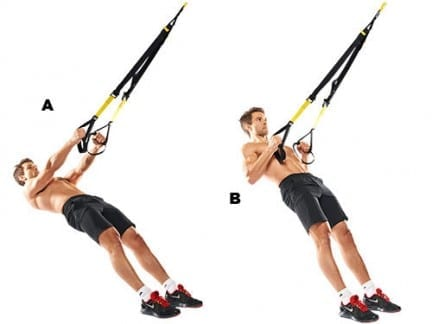
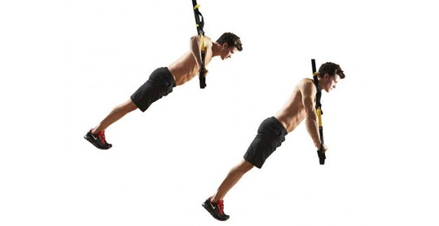
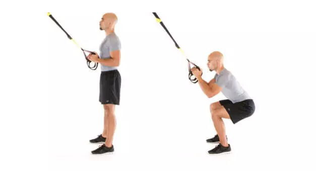
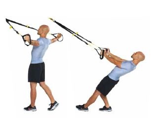

What is TRX
TRX uses a single strap hung in half, usually from a ceiling, with
loops for hands or feet on either end. The singular piece of kit
might not look like much, but after a few minutes of this tough
workout, you'll soon be feeling it. TRX equipment has been a common
sight in gyms for some time, but now specially created classes are
popping up all over the country. Led by an instructor, classes are a
perfect option for anyone wanting to give TRX a go for the first
time.

TRX ROW
a) Start by facing the TRX anchor point – take hold of the handles
with a neutral grip (palms facing each other) b) Take a step
forward so the TRX is taut then lean back slightly so the TRX is
supporting your bodyweight: Your arms will now be straight and
you’re ready to begin c) Pulling through your arms, bring your
chest to meet your hands bending at the elbows, squeezing your
shoulder blades together as you reach the top d) Lower yourself
back to your starting point under control to complete 1 rep.
Read more.

CHEST PRESS
a) Start by facing away from the anchor point – the TRX should be
on the outside of your arms and your palms facing down b) Take a
step back to create a 45º angle with your body c) Begin the
movement by lowering your chest towards your hands by bending your
elbows (like a press up) **you must maintain a straight back
throughout the movement d) Return to your starting point by
extending your elbows to straighten your arms.
Read more.

TRX SQUAT
a) Begin by facing the anchor point – take hold of the TRX with a
neutral grip to take all the slack, ensuring the TRX is supporting
your bodyweight b) Start the squat using the resistance of the TRX
to assist you on the way down c) Push yourself to squat slightly
lower (think hack squat) which means more glue activation **the
leverage supplied by the TRX should make this easier d) Complete
the rep by returning to your starting point with slightly bent
knees.
Read more.

TRX FLY
a) Begin by facing the anchor point with your arms straight out in
front of you at shoulder height (hands should be facing in) b)
Separate your arms by squeezing your shoulder blades together: the
further you spread your arms the more leverage you feel c) Ideally
at the end of the contraction both arms will be straight out at
either side of your body d) To repeat the repetition slowly
reverse the movement.
Read more.